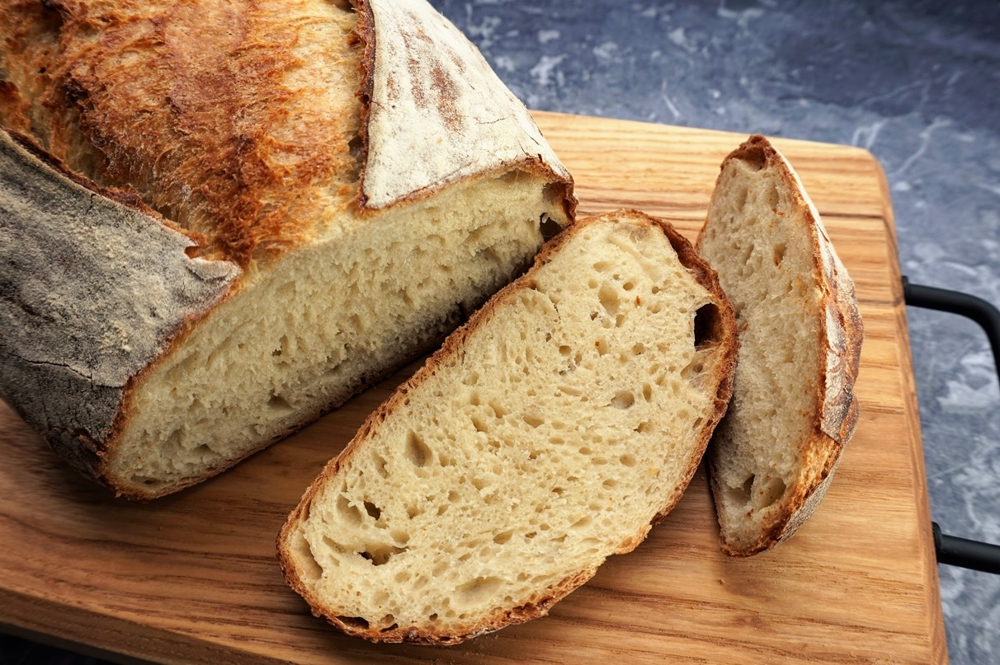

Recipes
Homestyle Bread

- 2 cups warm water (110 degrees F/45 degrees C)
- 1/2 cup white sugar
- 1 1/2 tablespoons active dry yeast
- 1 1/2 teaspoons salt
- 1/4 cup vegetable oil
- 5-6 cups flour. You can use all-purpose flour OR bread flour!
In a large bowl, dissolve the sugar in warm water and then stir in yeast. Allow to proof until yeast resembles a creamy foam, about 5 minutes. Mix salt and oil into the yeast. Mix in flour one cup at a time. Knead dough for 7 minutes. Place in a well oiled bowl, and turn dough to coat. Cover with a damp cloth. Allow to rise until doubled in bulk, about 1 hour. Punch dough down. Knead for 1 minute and divide in half. Shape into loaves and place into two greased 9×5 inch loaf pans. Allow to rise for 30 minutes, or until dough has risen 1 inch above pans. Bake at 350 degrees F (175 degrees C) for 30-40 minutes. Cool, brush with butter and enjoy!
Chocolate Chip Cookies